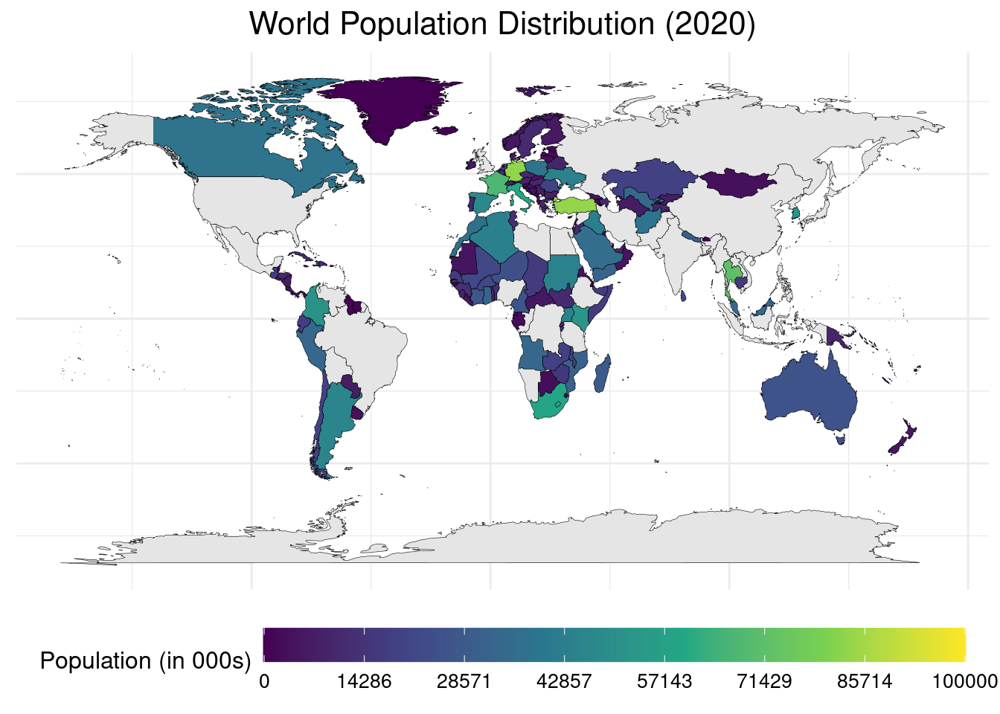
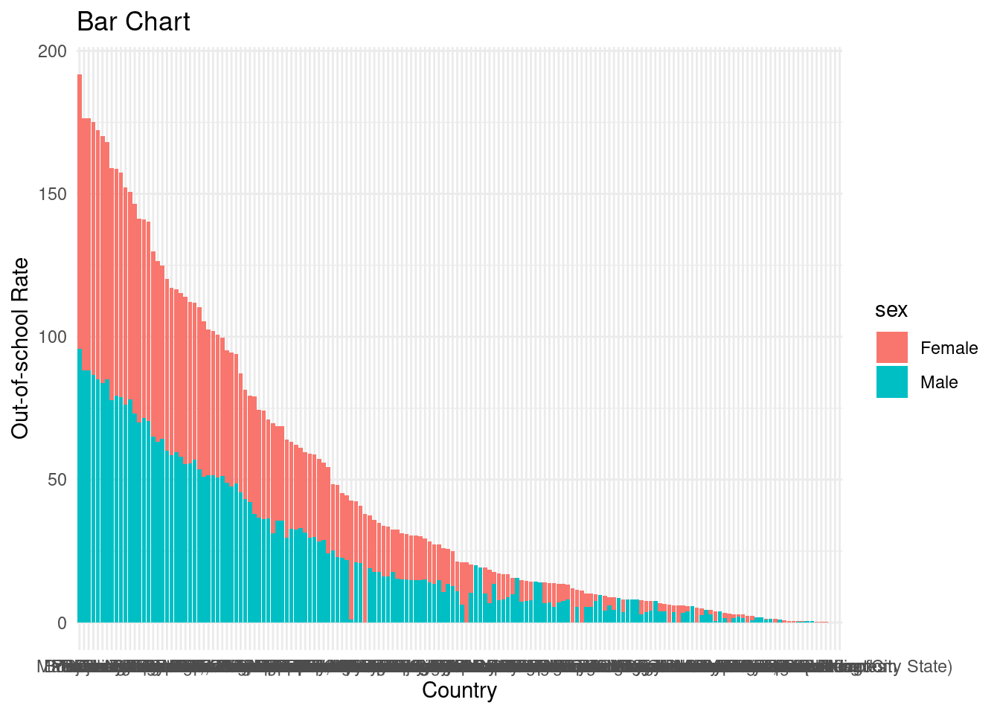
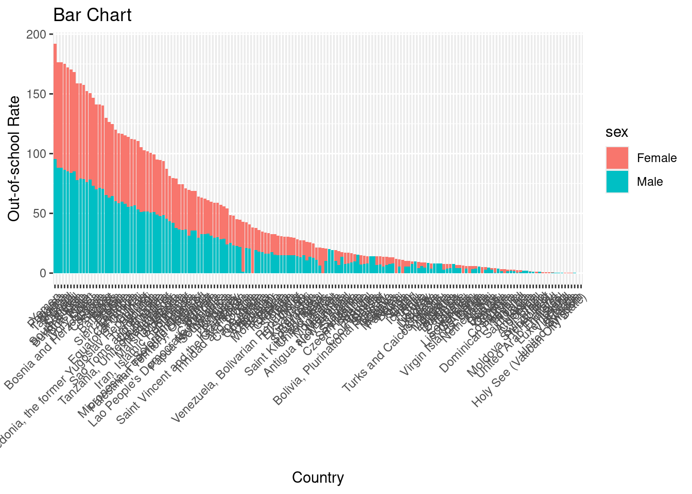
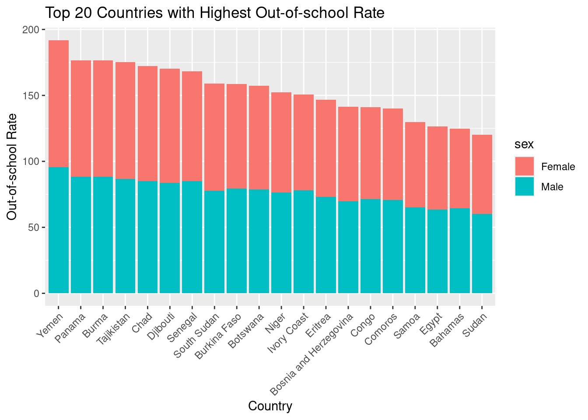
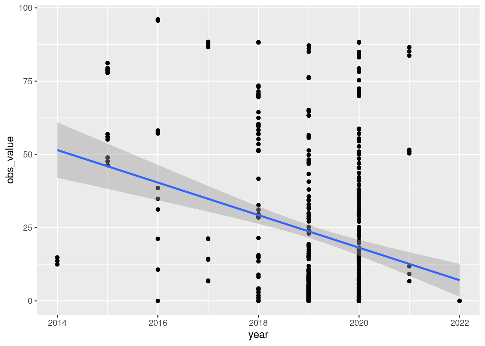
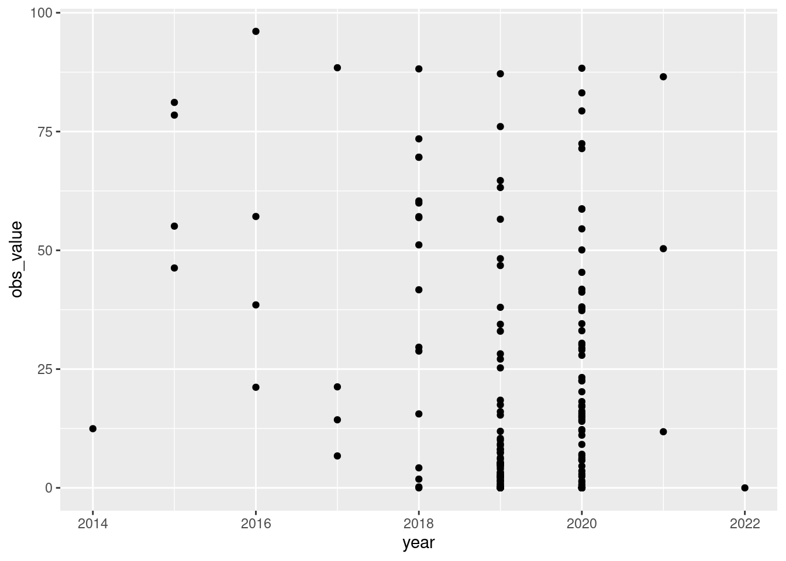
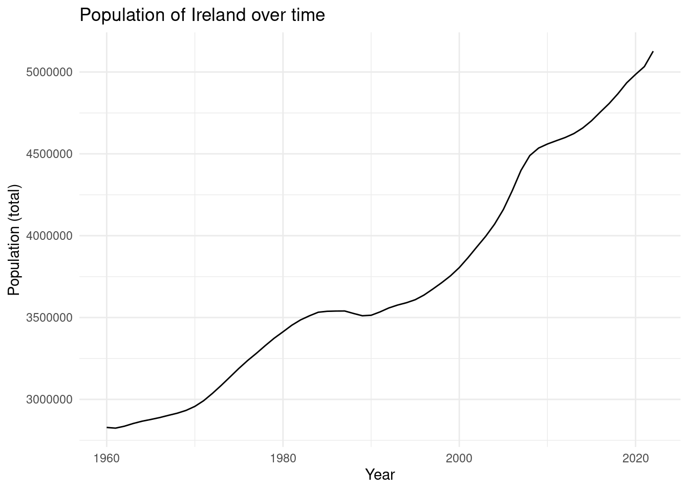

Insights Unveiled for Global Dynamics in GDP, Population, Life, Defense and Education in 2020
Closing the Gap: Why Gender Matters in Out-of-School Rates
A child’s basic rights is to be given the opportunity to receive primary education. A solid foundation and possibilities for achievement in the future could be established through a strong primary education. The fourth objective of the Sustainable Development Agenda acknowledges the significance of primary education by declaring that universal opportunity for primary education is one of the primary objectives for ensuring a high-quality education that is equitable and inclusive while encouraging opportunities for lifelong learning for everyone by 2030. Primary education tends to be for children aged 6 to 11, however standards differ.
Data
World Map
A tremendous amount of development has been accomplished in the field of elementary education for everyone. In 2021, the revised net rate of attendance was 87% globally, indicating that around 4/5 of the children enrolled in primary school attended school. furthermore, there have been more than 35% fewer children that are not attending school than the previous two decades earlier. There still has a long way to go, however, as 64 million primary school-age children have not enrolled in education, the most of them are from communities that are marginalized.
Bar Chart



The international community recognizes the trans formative power of primary education. As you mentioned, Sustainable Development Goal 4 highlights the importance of ensuring inclusive and equitable quality education, with a focus on primary education, by 2030. This global commitment reflects the understanding that primary education is not just a right, but an investment in a brighter future for all.
Out-of-school rates remain a significant challenge across the globe, particularly in developing countries. While achieving universal primary education is a key goal of the Sustainable Development Agenda, a sobering reality exists. According to the World Top 20 Project, several countries grapple with exceptionally high out-of-school rates.
At the forefront of this challenge are countries like Somalia, Nigeria, Yemen, Egypt, Sudan Here, a substantial portion of children in the primary school age range, typically 6 to 11, lack access to education. This translates to a missed opportunity to build a strong foundation for their future and contribute meaningfully to society.
Scatter plot
While out-of-school rates are a pressing issue globally, particularly in developing nations, the problem isn’t always equal for boys and girls. Historically, girls have faced greater barriers to education, leading to a wider gender gap in out-of-school rates.
Thankfully, this gap has been narrowing in recent years. According to the UNESCO Institute for Statistics, globally, there are now more girls enrolled in primary education than boys. However, disparities still persist in many regions
Ensuring equal access to education for girls is crucial. Educated girls are more likely to be healthy, participate in the workforce, and contribute to their communities. They are also less likely to marry young and have healthier children. Closing the gender gap in out-of-school rates is not just about fairness; it’s about unlocking the full potential of every child and building a brighter future for all.



Time Series
Ireland boasts a very different story compared to the global challenges of out-of-school rates. Here, education is compulsory from ages 6 to 16, and the vast majority of children attend school throughout this period.
Data from the Central Statistics Office (CSO) in Ireland indicates very low out-of-school rates for both boys and girls. The most recent data focuses on a broader category – young people who are neither in employment, education, or training (NEET). In 2018, the CSO reported that about one in eight young men and women fell into this category, suggesting minimal disparity between genders.
While Ireland celebrates its high participation rates in education, there’s always room for improvement. Efforts are ongoing to ensure equitable access to quality education for all children, regardless of background or socioeconomic status. This may involve addressing any lingering achievement gaps or disparities in subject selection between boys and girls observed in higher education.